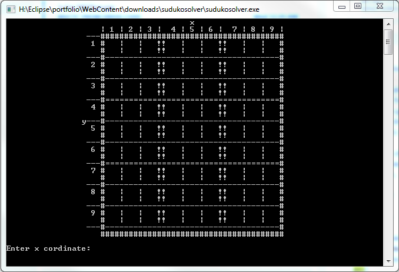

Sudoku Solver
My sudoku solver program. I selected this program because it's one of the better programs I've made. You enter the unsolved board and it will solve it and print out the solved board(it doesn't work with all puzzles, for example ones that require guessing) I am proud of this program because it took a lot of time and helped me learn a lot. if I were to improve it, I would make it so that it solves all puzzles.
Download